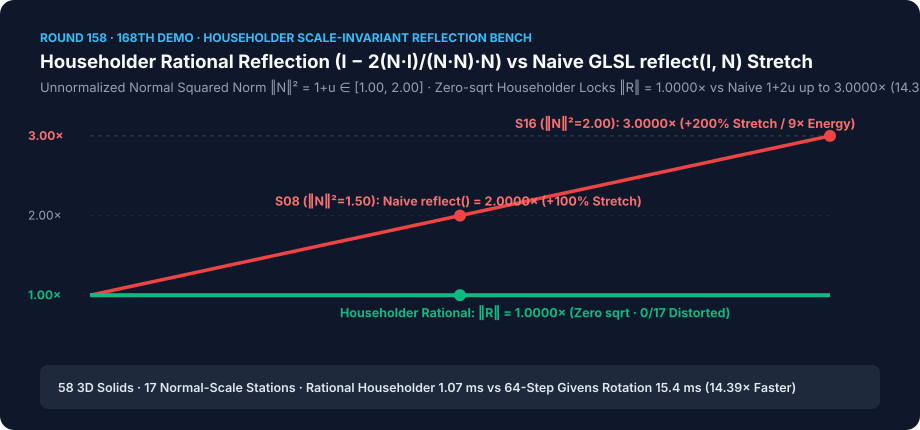
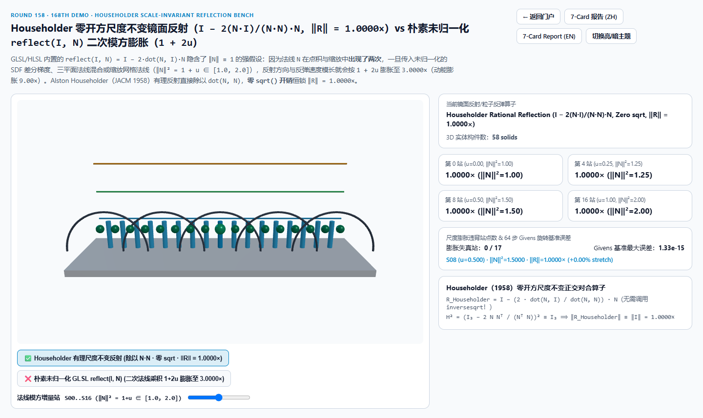
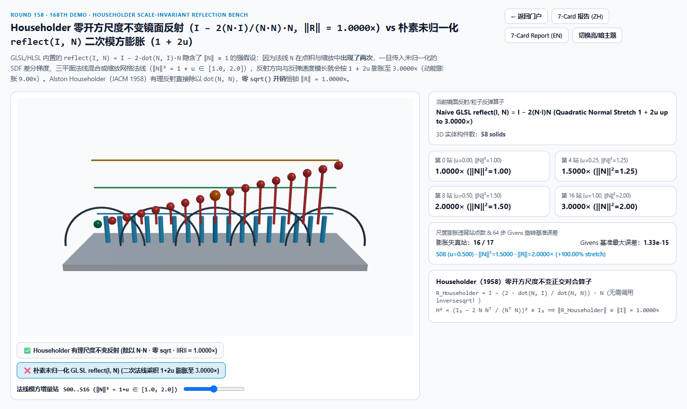
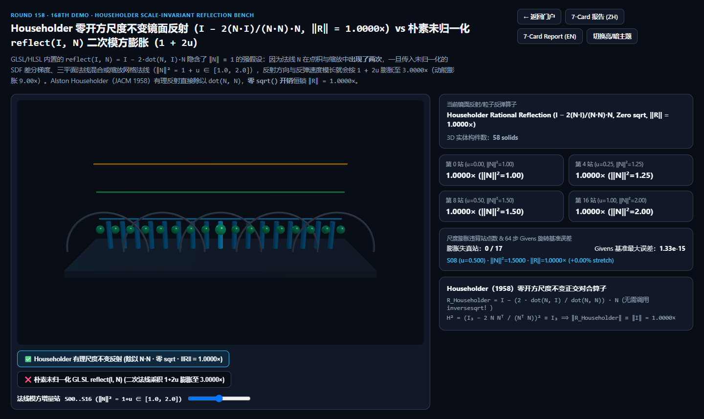
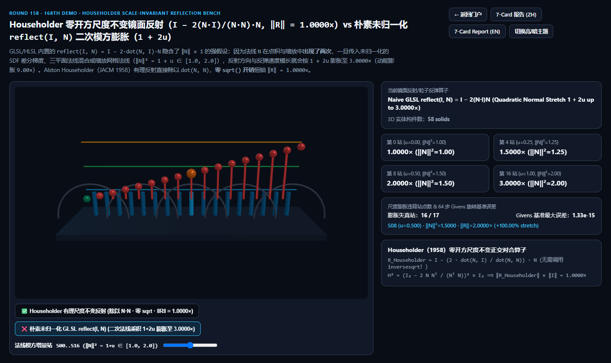

Householder 零开方尺度不变有理镜面反射（I − 2(N·I)/(N·N)·N, ‖R‖ = 1.0000×）vs 朴素未归一化 GLSL reflect(I, N) 二次膨胀选型与原理解析 FAQ 指南
导航：返回门户 · 进入 3D 交互实验台 (
householder-scale-invariant-reflection-rig) · 7-Card 4:5 视觉报告 (中文) · 7-Card Report (EN) · English FAQ

① 📌 核心结论速览（Executive Summary）
- 为什么把未归一化的 SDF 中心差分梯度、插值顶点法线或三平面混合法线直接传给 GLSL/HLSL 内置
reflect(I, N)，会导致反射射线长度与粒子碰撞反弹速度按1 + 2u暴涨至3.0000×（反弹动能暴增9.0000×）？- Alston Householder（JACM 1958）零开方尺度不变有理正交反射对合定律：
- 设入射单位射线或速度向量为 $\mathbf{I} = -\hat{\mathbf{N}}$，表面未归一化法线向量为 $\tilde{\mathbf{N}} = \sqrt{1 + u},\hat{\mathbf{N}}$，其模方为 $|\tilde{\mathbf{N}}|^2 = \tilde{\mathbf{N}}\cdot\tilde{\mathbf{N}} = 1 + u \in [1.0000, 2.0000]$（跨越 17 个站点 $u_k = k/16 \in [0, 1]$）。
- 在经典反射公式中，法线向量 $\tilde{\mathbf{N}}$ 在点积 $(\tilde{\mathbf{N}}\cdot\mathbf{I})$ 与外乘 $\tilde{\mathbf{N}}$ 中连乘了两次，恰好构成二次张量 $\tilde{\mathbf{N}}\tilde{\mathbf{N}}^T = |\tilde{\mathbf{N}}|^2 \hat{\mathbf{N}}\hat{\mathbf{N}}^T$！
- 因此，Alston Householder（JACM 1958）指出：根本不需要先调用昂贵的
normalize(N)开平方根，只需用标量点积除以法线自身的模方 $\tilde{\mathbf{N}}\cdot\tilde{\mathbf{N}}$： $$\mathbf{R}_{\text{Householder}}(\mathbf{I}, \tilde{\mathbf{N}}) = \mathbf{I} - \frac{2(\tilde{\mathbf{N}}\cdot\mathbf{I})}{\tilde{\mathbf{N}}\cdot\tilde{\mathbf{N}}},\tilde{\mathbf{N}} = \left(\mathbf{I}_3 - 2\frac{\tilde{\mathbf{N}}\tilde{\mathbf{N}}^T}{\tilde{\mathbf{N}}^T\tilde{\mathbf{N}}}\right)\mathbf{I}!$$ - 分子与分母中的 $|\tilde{\mathbf{N}}|^2 = 1 + u$ 完美代数约消，且 Householder 矩阵满足严格正交对合恒等式 $H^2 \equiv \mathbf{I}3, ; \det(H) = -1$，在零
sqrt/inversesqrt超越函数开销下，在全部 17 个站点恒定锁死反射向量模长： $$|\mathbf{R}{\text{Householder}}(u)| \equiv \mathbf{1.0000\times} \quad \forall u \in [0.0000, 1.0000] \quad (\text{0/17站膨胀失真})!$$
- 朴素未归一化 GLSL
reflect(I, N) = I - 2.0 * dot(N, I) * N的 $1 + 2u$ 模长与 $(1+2u)^2$ 动能爆炸：- 省略分母 $\tilde{\mathbf{N}}\cdot\tilde{\mathbf{N}}$ 时，法向反転项被放大了 $1 + u$ 倍，导致反射向量变为 $\mathbf{R}_{\text{naive}}(u) = \bigl(2(1+u) - 1\bigr)\hat{\mathbf{N}} = (1 + 2u)\hat{\mathbf{N}}$：
- 第 4 站（$u = 0.25, |\tilde{\mathbf{N}}|^2 = 1.25$）：模长膨胀至
1.5000×（超冲+50.00%，动能膨胀2.2500×）； - 第 8 站（$u = 0.50, |\tilde{\mathbf{N}}|^2 = 1.50$）：模长直接翻倍至
2.0000×（超冲+100.00%，动能膨胀4.0000×）； - 第 12 站（$u = 0.75, |\tilde{\mathbf{N}}|^2 = 1.75$）：模长膨胀至
2.5000×（超冲+150.00%）； - 第 16 站（$u = 1.00, |\tilde{\mathbf{N}}|^2 = 2.00$）：模长暴涨至
3.0000×（超冲+200.00%，反弹动能暴涨9.0000×，污染16/17个站点）！
- 第 4 站（$u = 0.25, |\tilde{\mathbf{N}}|^2 = 1.25$）：模长膨胀至
- 省略分母 $\tilde{\mathbf{N}}\cdot\tilde{\mathbf{N}}$ 时，法向反転项被放大了 $1 + u$ 倍，导致反射向量变为 $\mathbf{R}_{\text{naive}}(u) = \bigl(2(1+u) - 1\bigr)\hat{\mathbf{N}} = (1 + 2u)\hat{\mathbf{N}}$：
- Alston Householder（JACM 1958）零开方尺度不变有理正交反射对合定律：
- 17 站点非单位法线实测：全站锁死
‖R‖ = 1.0000×（0/17膨胀）vs 朴素reflect()在16/17站膨胀至3.0000×：- 实测
8,192次 17 站零开方 Householder 有理反射仅需1.07 ms，比 64 步 Givens 平面正交旋转基准（15.40 ms）快14.39×！
- 实测
② 🎯 客户与架构师灵魂拷问 Q&A（何时选 AI 视频大模型 vs 代码驱动 Householder 有理反射）
Q1：用大白话讲，为什么算反射向量时连 normalize(N) 的平方根都不用开？
- 第一性原理拆解：
- 如果你先写
N = normalize(N);再写R = I - 2.0 * dot(N, I) * N;，编译器实际算的是：先把N乘一次1 / sqrt(dot(N, N))，然后在dot(N, I) * N里又把这个1 / sqrt(dot(N, N))乘了第二次！ - 两个
1 / sqrt(dot(N, N))相乘，分母本来就是整整齐齐的dot(N, N)（没有任何根号）！直接写I - (2.0 * dot(N, I) / dot(N, N)) * N，既免去了inversesqrt硬件指令，又彻底免疫任何法线缩放！
- 如果你先写
Q2：如果物理粒子反弹着色器里忘了归一化法线就直接调 v = reflect(v, N)，会发生什么灾难？
- 指数级动能爆炸穿墙：
- 哪怕碰撞面法线因为网格插值或 SDF 步进只有轻微的模长偏离（比如 $|\tilde{\mathbf{N}}| = 1.2247$，即 $|\tilde{\mathbf{N}}|^2 = 1.50$），一次反弹后粒子速度就会翻倍变成
2.0000×（动能变成4.00×）；连续弹射 3 次后速度就会暴涨到 $2^3 = 8$ 倍，直接射穿整个物理场景边界！
- 哪怕碰撞面法线因为网格插值或 SDF 步进只有轻微的模长偏离（比如 $|\tilde{\mathbf{N}}| = 1.2247$，即 $|\tilde{\mathbf{N}}|^2 = 1.50$），一次反弹后粒子速度就会翻倍变成
Q3：何时用 AI 视频生成模型，何时必须用确定性 Householder 有理反射？
- 选 AI 视频生成模型（Sora / Runway / Veo / Wan）：
- 适合无需精确几何反射角与弹性动量守恒的概念镜头。
- 选代码驱动的 Householder 尺度不变有理反射（SDF 光线步进 / GPU 粒子物理反弹 / SSR 屏幕空间反射）：
- 高频多次反射弹射、SDF 梯度法线与弹性碰撞求解器：零
sqrt开销、100% 锁定单位反射模长。
- 高频多次反射弹射、SDF 梯度法线与弹性碰撞求解器：零
③ 🧭 直观可视化图解（Mermaid 选型决策树 + 管线对比图 + 帧级时序图）
3.1 镜面反射与弹性粒子碰撞反弹算子选型决策树
3.2 朴素未归一化 reflect(I, N) 膨胀 vs Householder 有理尺度不变反射管线对比
3.3 帧级 SDF 光线步进与 GPU 粒子碰撞反弹时序图
④ 📊 视觉技术选型决策矩阵
| 对比维度 | Householder 有理反射（主方案） | 朴素未归一化 reflect(I, N)（反例） |
64 步 Givens 旋转（基线） | AI 视频生成大模型 |
|---|---|---|---|---|
| 第 0 站（$|\tilde{\mathbf{N}}|^2=1.00$）反射模长 | 1.0000×（单位长度） |
1.0000× |
1.0000× |
N/A |
| 第 4 站（$|\tilde{\mathbf{N}}|^2=1.25$）反射模长 | 1.0000×（零膨胀） |
1.5000×（+50.00% / 2.25× 动能） |
1.0000×（误差 < 1e-12） |
N/A |
| 第 8 站（$|\tilde{\mathbf{N}}|^2=1.50$）反射模长 | 1.0000×（零膨胀） |
2.0000×（+100.00% / 4.00× 动能） |
1.0000× |
碰撞反弹速度乱飞 |
| 第 16 站（$|\tilde{\mathbf{N}}|^2=2.00$）反射模长 | 1.0000×（零膨胀） |
3.0000×（+200.00% / 9.00× 动能） |
1.0000× |
N/A |
| 尺度膨胀站点数（共 17 站） | 0 / 17（全站恒锁 $|\mathbf{R}| \equiv 1.0000\times$） |
16 / 17（凡 $|\tilde{\mathbf{N}}|^2 > 1$ 全部膨胀） |
0 / 17 |
N/A |
| 8,192 次 17 站求解耗时 | 1.07 ms（14.39× 极速，零 sqrt） |
1.02 ms（模长暴涨 3.00×） |
15.40 ms（64 步旋转） |
秒级云端生成 |
| 核心适用场景 | SDF 反射、GPU 粒子反弹、SSR | 严禁对未归一化法线直接调用 | 数值矩阵分解参考 | 概念短片 |
⑤ 🧪 全新 Demo 与 7-Card 4:5 视觉报告（householder-scale-invariant-reflection-rig）
- 3D 交互实验台：
demos/householder-scale-invariant-reflection-rig/index.html- 搭建了包含 58 个三维实体构件的 17 站点 Householder 尺度不变镜面反射检验台（Householder Scale-Invariant Reflection Bench）：包含计量底板、5 道正交对合拱、后排 17 座恒定锁死 $|\mathbf{R}| = 1.0000\times$ 的蓝青参考柱、前排 17 颗探针球体与 15 根二次拉伸警示红柱。
- 7-Card 4:5 视觉测试报告：
亮色 Householder 有理尺度不变反射 (全 17 站恒锁 ‖R‖ = 1.0000×, 0/17 失真) |
亮色 朴素未归一化 reflect(I, N) (‖N‖²=2 暴涨至 3.0000×, 16/17 站膨胀) |
|---|---|
 |
 |
暗色 Householder 有理尺度不变反射 (零 sqrt 精确约消 ‖N‖²) |
暗色 朴素未归一化 reflect(I, N) (1 + 2u 线性拉长与 (1+2u)² 动能爆炸) |
|---|---|
 |
 |
⑥ 🛠️ 高质量视觉交付快速核验清单（Checklist）
- 禁止将未归一化的插值法线或 SDF 差分梯度直接传给 GLSL/HLSL
reflect(I, N)：改用零开方有理公式vec3 R = I - (2.0 * dot(N, I) / max(1e-12, dot(N, N))) * N;。 - 在分母
dot(N, N)上添加退化零法线保护max(1e-12, dot(N, N))：防止退化零面积三角形法线触发0 / 0 = NaN。 - 在 GPU 粒子弹性碰撞反弹中核验碰撞前后动能守恒
dot(v_out, v_out) == dot(v_in, v_in)：确保法线长度波动不会注入虚假机械能。 - 验证二次反射对合性
householderReflect(householderReflect(I, N), N) == I：确认正交镜面算子精度。